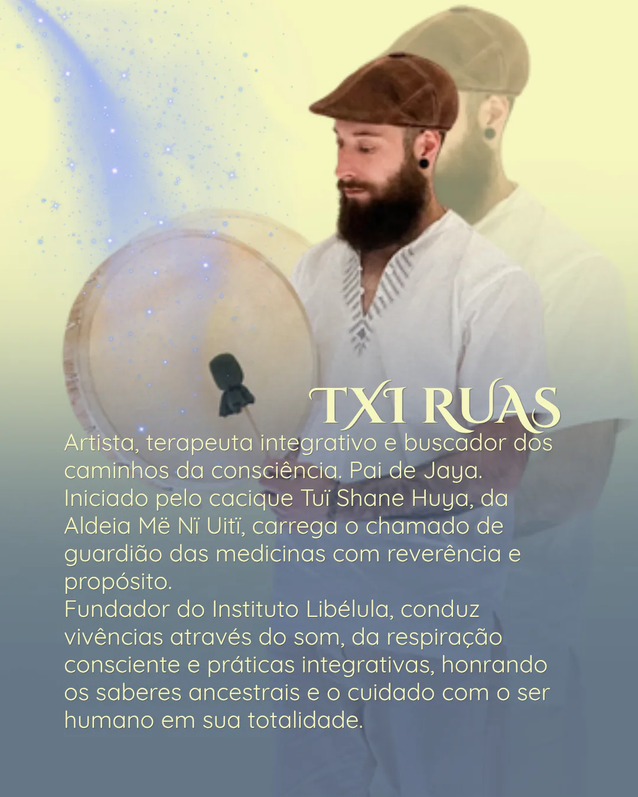
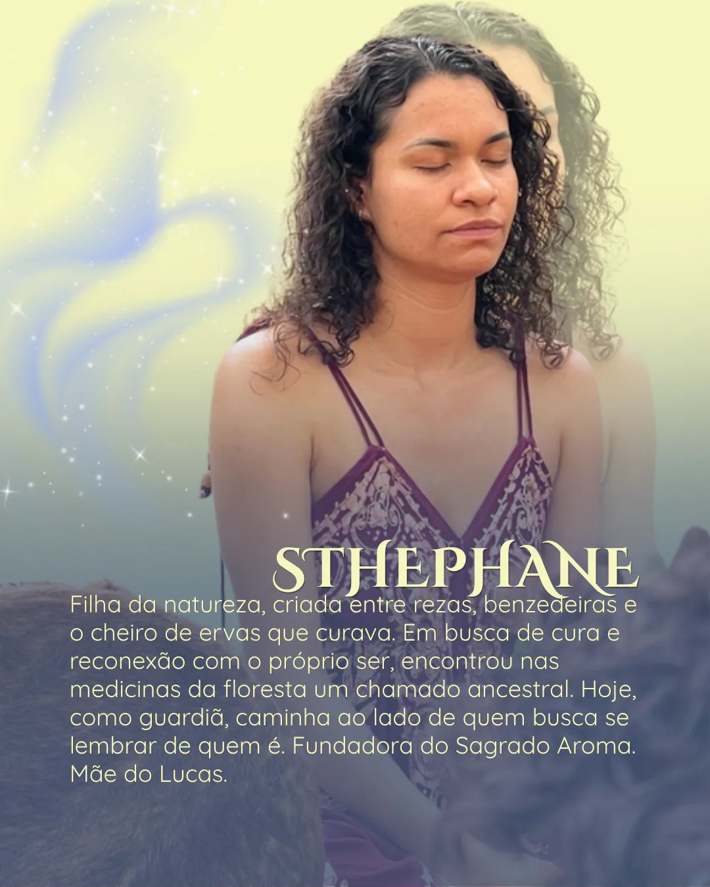
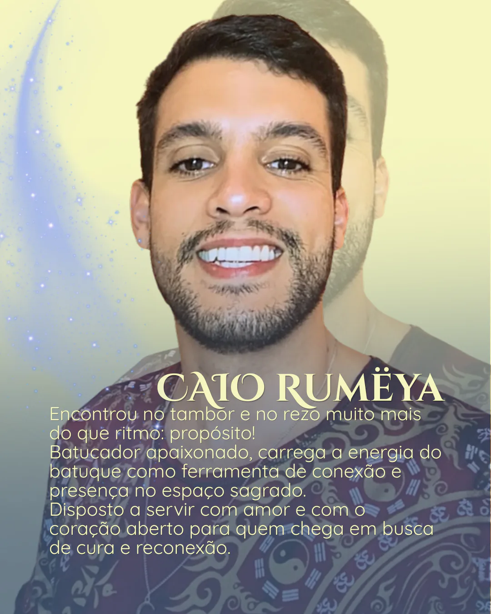
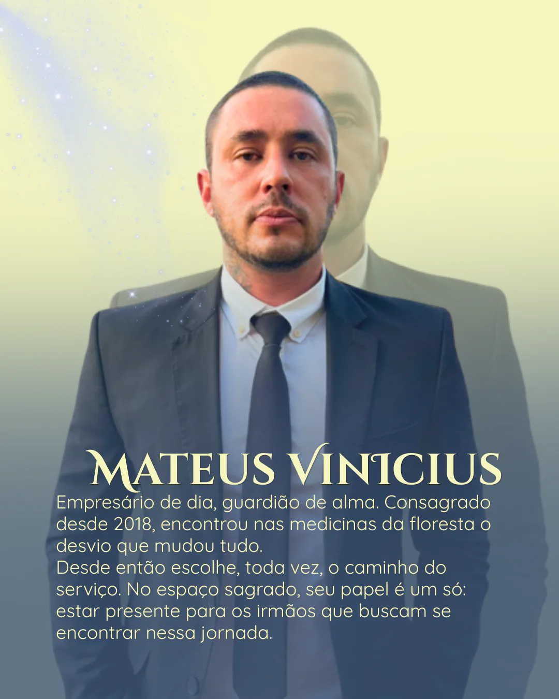
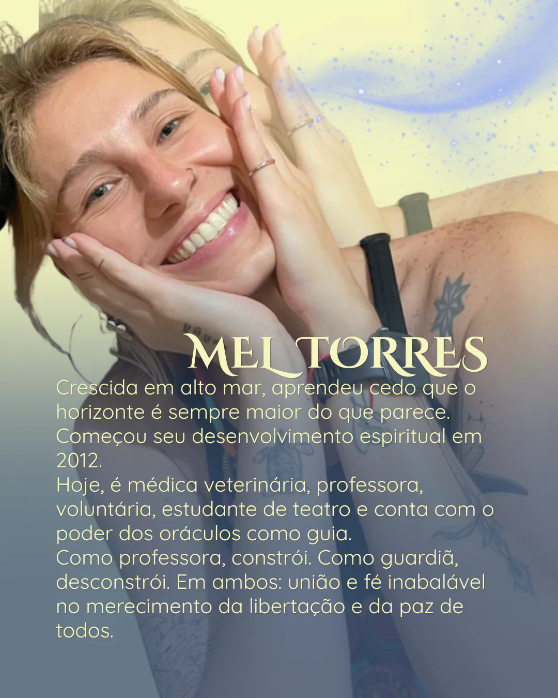
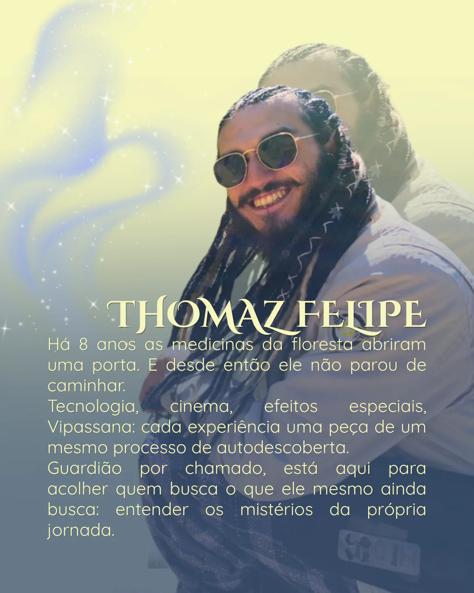

Medicinas da Floresta
O ritual sagrado, o coração da vivência: Ayahuasca, Rapé e Sananga.
Medicina do som, da respiração e da floresta a serviço da saúde mental.
O Instituto
O Instituto Libélula é um espaço de cura, autoconhecimento e reconexão. Nossa proposta é universalista: compreendemos que a busca pelo sagrado e pelo bem-estar não depende de dogmas, mas da experiência direta do indivíduo com sua própria essência. Atuamos com ferramentas ancestrais e contemporâneas em um ambiente preparado, pautado pelo acolhimento, pela ética e pelo respeito à diversidade. Aqui, cada jornada é única.
Três caminhos
O ritual sagrado, o coração da vivência: Ayahuasca, Rapé e Sananga.
Ferramentas de acesso que preparam o corpo e o campo: soundhealing e respiração.
A jornada contínua que não acaba no ritual, começa: integração, astrologia, comunidade.
Do primeiro contato à vivência
A participação começa com uma conversa. Cada etapa existe para que você receba informações, compartilhe o necessário e chegue à vivência com orientações claras.
Você chama no WhatsApp, tira suas dúvidas e recebe as primeiras informações sobre a vivência.
O Instituto conhece seu histórico e compartilha as orientações individuais necessárias.
Disponibilidade, valor e pagamento por Pix são confirmados depois da conversa e da anamnese.
Você recebe o preceito, o horário, a localização e as informações práticas para o encontro.
Quer entender se esta vivência faz sentido para você?
Começar uma conversaSeu primeiro contato
É comum surgirem dúvidas ou apreensão antes da primeira vivência. Por isso, o primeiro passo é uma conversa. Nossa equipe apresenta o funcionamento do ritual, escuta cada pessoa e oferece as orientações necessárias para uma participação consciente.
Conversar antes de participarNossa abordagem é centrada no acolhimento e na ausência de pressões.
Da floresta
Toque em cada medicina para conhecer. Cada vivência é única: não dizemos o que você vai sentir.
Ayahuasca: a medicina da expansão.
A Ayahuasca é uma medicina ancestral, utilizada por povos originários da Amazônia há séculos. Preparada a partir de duas plantas, é servida em rituais sagrados como ferramenta de autoconhecimento, cura e conexão. No Instituto Libélula, a consagramos com respeito, intenção e cuidado.
Atua como uma ponte para o mundo interior. Seu trabalho mais profundo costuma aparecer na clareza que chega depois, e não em "ver coisas":
Cada vivência é única. É por isso que não dizemos o que você vai sentir. A jornada é sua.
Rapé: a medicina do aterramento e do silêncio mental.
O Rapé é um pó sagrado dos povos originários, preparado a partir de plantas medicinais e cinzas de árvores. No Instituto, é uma medicina consagrada de limpeza e foco.
É a medicina da presença absoluta, um ancoradouro quando a mente tenta fugir para o passado ou para o futuro:
Cada vivência é única. Não dizemos o que você vai sentir. A jornada é sua.
Sananga: a medicina do fogo frio e da resiliência.
A Sananga é uma medicina tradicional dos povos originários da Amazônia, aplicada como gotas nos olhos. É reconhecida pela limpeza profunda, física e energética.
Ela ensina o corpo a relaxar diante do desconforto. O ardor dos primeiros minutos cede lugar a um relaxamento profundo:
Cada vivência é única. Não dizemos o que você vai sentir. A jornada é sua.
Do som e do corpo
Soundhealing: a afinação do corpo.
O Soundhealing é uma jornada de imersão sonora que utiliza frequências de instrumentos ancestrais (taças, gongos, tambores, didgeridoo) para induzir relaxamento e harmonia.
O som viaja pela água e pelos ossos do corpo. É o alicerce do relaxamento e prepara o terreno interno de forma calma e segura:
Imagine o corpo como um instrumento que, com o tempo e o estresse, vai se desafinando. O Soundhealing é um momento para se deitar, fechar os olhos e permitir que os sons ajudem o corpo a se reorganizar. Não é preciso acreditar em nada, nem fazer esforço.
Cada experiência é única. É menos sobre entender e mais sobre sentir.
Cuidado em cada etapa
A vivência é acompanhada por orientações que começam antes do encontro e continuam na integração. Este é um panorama geral do cuidado oferecido pelo Instituto.
Antes
Durante
Cantos, tambores, maracás e outros instrumentos organizam momentos da vivência e podem oferecer uma referência de atenção quando a experiência se torna intensa.
A respiração consciente é utilizada como recurso de presença e centramento. A equipe pode orientar a atenção ao ritmo respiratório e ao contato com o corpo.
Algumas pessoas podem apresentar náusea, vômito, choro ou outras manifestações; outras não. No Instituto, esse processo pode ser compreendido simbolicamente como limpeza, sem impor uma interpretação única.
Depois
Quem sustenta o espaço
Cada pessoa reúne uma trajetória própria e uma responsabilidade na construção das vivências.
Nossos facilitadores e guardiões são responsáveis por manter o campo de segurança e a egrégora do Instituto. Têm anos de estudo, prática e vivência com as medicinas e técnicas que utilizamos.
O papel do Guardião não é “curar” você. É criar o espaço seguro, o suporte necessário e o olhar atento para que você realize seu próprio processo de cuidado e autotransformação.






Agenda e valores
25 de julho (dia fora do tempo). Depois, todo primeiro sábado do mês.
R$ 150 antecipado · R$ 220 depois. 30 vagas. Pagamento por Pix.
Chácara Aurora Austral, Piedade/SP.
Fale conosco
Fale com Thiago Biral, Txi Ruas, facilitador das vivências.
Também fazemos parte de comunidades no WhatsApp. Chame no contato acima para participar.
![✦ Txi Ruas Fundador e facilitador Passe o mouse ou toque para conhecer TXI RUAS. Artista, terapeuta integrativo e buscador dos caminhos da consciência. Pai de Jaya. Iniciado pelo cacique Tuï Shane Huya, da Aldeia Më Nï Uitï, carrega o chamado de guardião das medicinas com reverência e propósito. Fundador do Instituto Libélula, conduz vivências através do som, da respiração consciente e práticas integrativas, honrando os saberes ancestrais e o cuidado com o ser humano em sua totalidade. ](assets/images/guardioes/txi-ruas.webp){kind=link}
{kind=link}
{kind=link}
{kind=link}
{kind=link}
{kind=link}